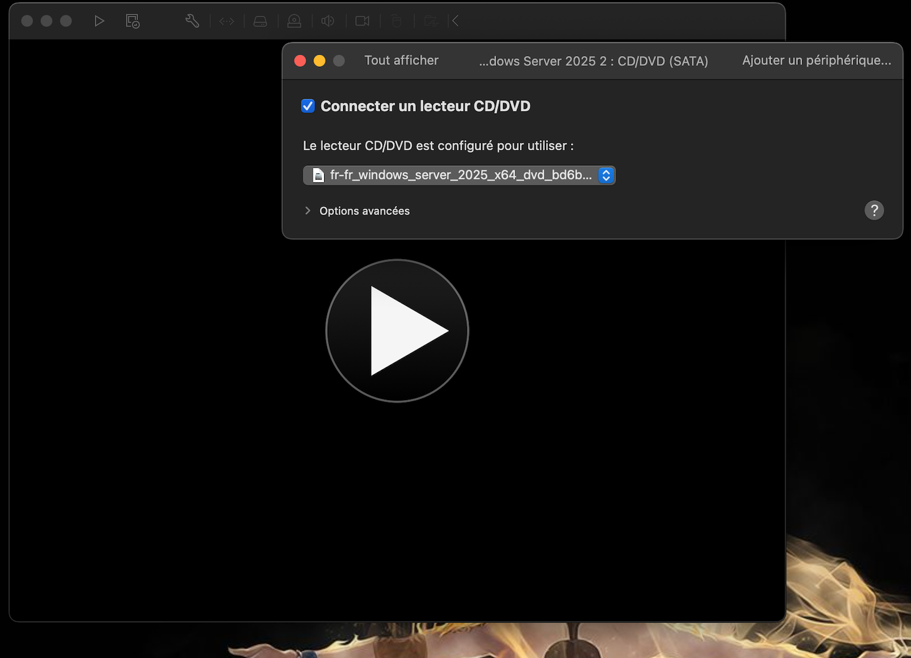
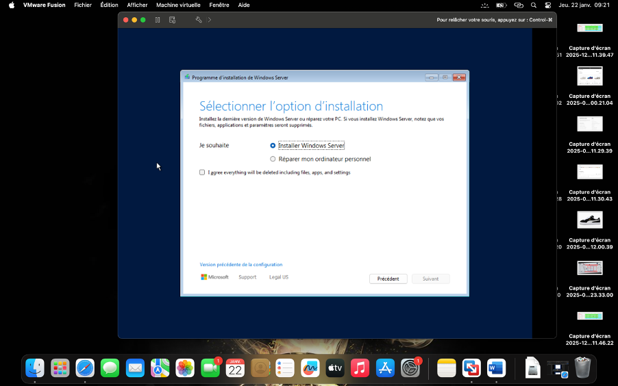
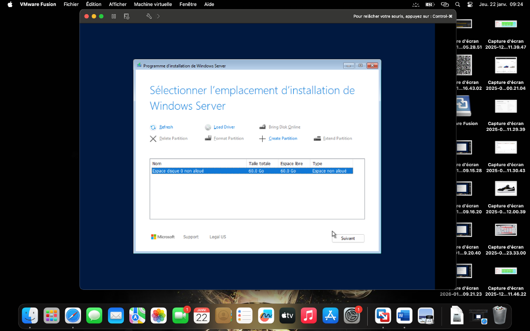
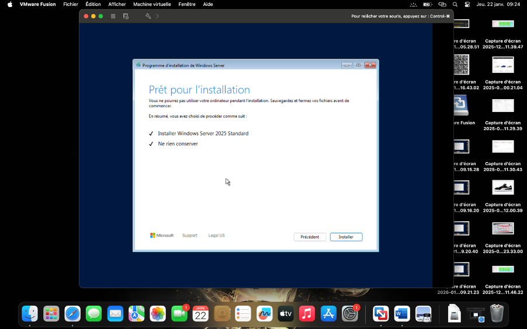
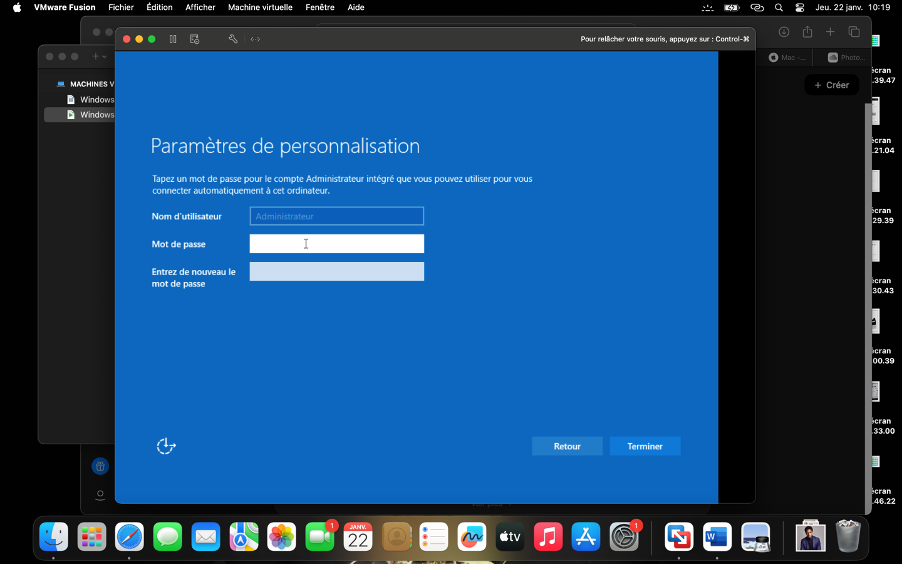
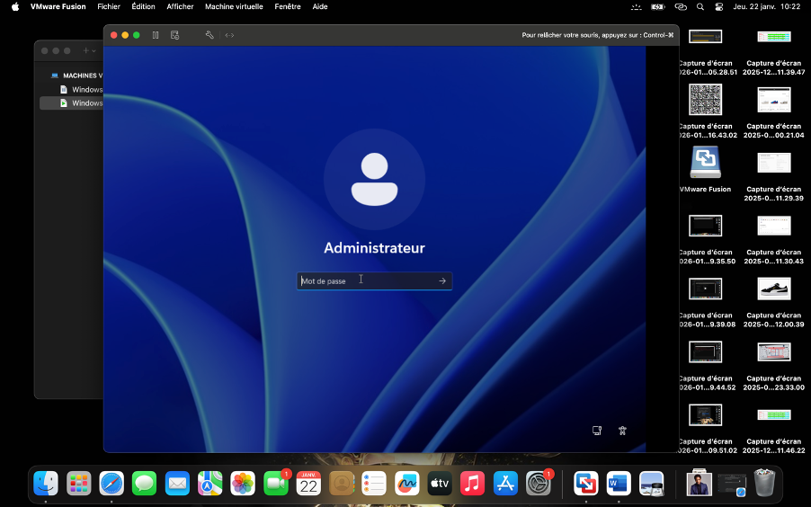
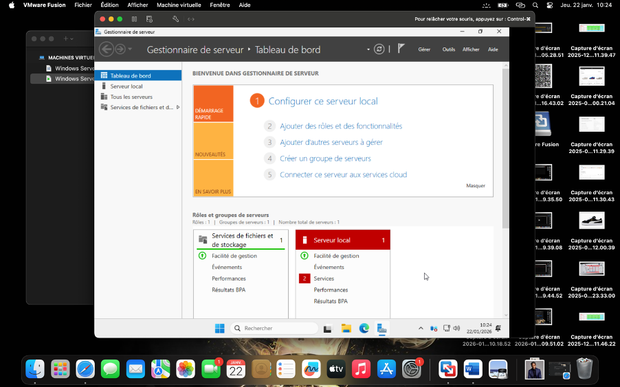
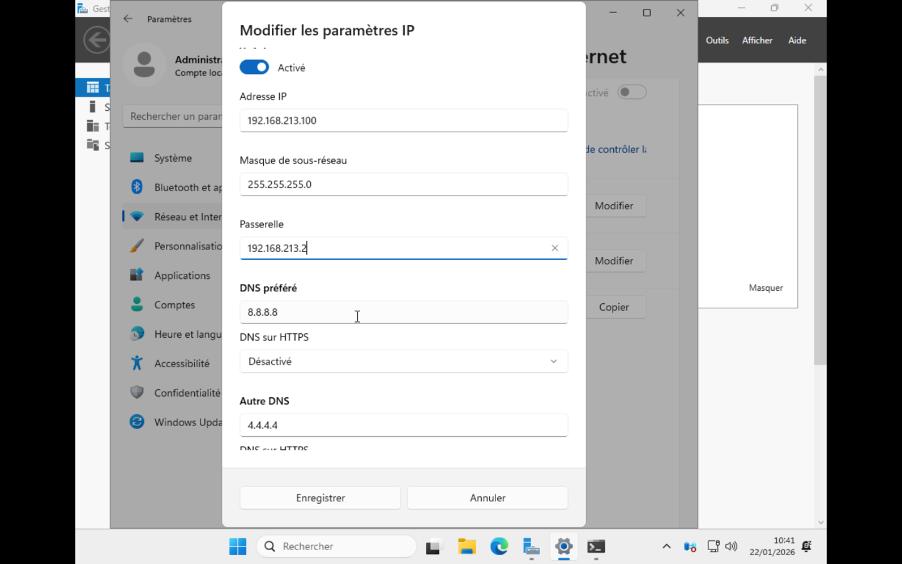

Introduction
Ce guide détaille la procédure pas à pas pour installer et configurer Windows Server 2025 sur une machine virtuelle VMware Fusion. Il se concentre spécifiquement sur l'installation de la version avec interface graphique complète (Desktop Experience) et la configuration correcte du réseau statique pour éviter les conflits courants.
Prérequis
- Logiciel : VMware Fusion (Pro ou Player) installé sur macOS
- Média d'installation : Fichier ISO de Windows Server 2025 Standard
- Ressources VM recommandées :
- Processeur : 2 vCPU minimum
- Mémoire (RAM) : 4 Go minimum (8 Go recommandés)
- Espace disque : 60 Go minimum
Installation de Windows Server 2025

Création de la VM
Lancez VMware Fusion et créez une nouvelle machine virtuelle en glissant votre fichier ISO Windows Server 2025. Suivez l'assistant jusqu'au démarrage de la VM.

⚠ Point CRITIQUE : Choix du Système d'Exploitation
Lors de l'installation, après avoir entré ou ignoré la clé de produit, vous verrez une liste de systèmes d'exploitation :
| Option affichée | Description | Choix |
|---|---|---|
| Windows Server 2025 Standard | Version Core (sans interface graphique) | ❌ NE PAS CHOISIR |
| Windows Server 2025 Standard (Desktop Experience) | Version complète avec Bureau | ✅ SÉLECTIONNER CECI |
| Windows Server 2025 Datacenter | Version Core Datacenter | ❌ NE PAS CHOISIR |
| Windows Server 2025 Datacenter (Desktop Experience) | Version complète Datacenter | Optionnel si besoin de Datacenter |
Suite de l'installation
- Sélectionnez "Personnalisé : Installer uniquement le système d'exploitation Windows (avancé)".

- Partitionnement : Sélectionnez le lecteur non alloué et cliquez sur Suivant. Windows créera automatiquement les partitions nécessaires.

- L'installation copiera les fichiers et redémarrera plusieurs fois.

Premier démarrage et configuration de base
Une fois l'installation terminée, vous arriverez sur l'écran de configuration finale.
- Mot de passe Administrateur : Définissez un mot de passe complexe (majuscules, minuscules, chiffres, caractères spéciaux).

- Connectez-vous avec le mot de passe défini.

- Le Gestionnaire de serveur s'ouvrira automatiquement.

Configuration réseau — Adresse IP fixe
Un serveur doit disposer d'une adresse IP fixe pour être contacté de manière fiable par les autres machines. Nous allons configurer cela en évitant l'erreur courante de configuration de la passerelle.
Analyse de votre réseau VMware
Par défaut, VMware Fusion utilise la plage 192.168.213.x :
- Adresse IP actuelle (DHCP) : 192.168.213.129
- Passerelle par défaut (Gateway) : 192.168.213.2
Configuration recommandée
Méthode : Via les Paramètres Windows (GUI)
- Faites un clic droit sur l'icône réseau dans la barre des tâches (en bas à droite) > Paramètres réseau et Internet.
- Cliquez sur Ethernet.
- À la ligne "Attribution d'adresse IP", cliquez sur Modifier.
- Passez de "Automatique (DHCP)" à Manuel.
- Activez IPv4.
- Remplissez les champs avec les valeurs recommandées.
- Cliquez sur Enregistrer.

Configuration avancée VMware Fusion
Par défaut, VMware Fusion utilise une plage d'adresses aléatoire (ici 192.168.213.x). Vous pouvez conserver cette configuration ou la modifier.
| Option | Avantages | Inconvénients | Recommandation |
|---|---|---|---|
| Garder 192.168.213.x | Configuration immédiate, pas de risque de casser le NAT VMware | Adresse moins standard | ✅ Recommandé pour débuter |
| Changer pour 192.168.1.x | Standard réseau classique, plus intuitif | Nécessite de modifier les fichiers de config VMware | Pour utilisateurs avancés |
Vérification et tests de connectivité
Une fois l'IP fixe configurée, il est impératif de valider la connexion.
- Ouvrez une invite de commande (
Win + R, tapezcmd). - Tapez la commande suivante pour vérifier vos paramètres :
ipconfig /allVérifiez que "DHCP activé" est sur "Non" et que les IP sont correctes.
Configuration DNS
Pour qu'un serveur puisse naviguer sur Internet et télécharger des mises à jour, il doit pouvoir résoudre les noms de domaine.
DNS Publics recommandés :
- Google :
8.8.8.8et8.8.4.4 - Cloudflare :
1.1.1.1et1.0.0.1
Bonnes pratiques de sécurité
- Windows Update : Lancez immédiatement une recherche de mises à jour après l'installation.
- Pare-feu : Ne désactivez pas le pare-feu. Créez des règles spécifiques pour vos applications.
- VMware Tools : Installez les VMware Tools (Menu "Machine Virtuelle" > "Installer VMware Tools") pour améliorer les performances graphiques et la gestion de la souris.
Dépannage réseau
| Symptôme | Cause probable | Solution |
|---|---|---|
Ping 8.8.8.8 échoue |
Mauvaise passerelle | Vérifiez que la passerelle est bien 192.168.213.2 et non votre propre IP |
Ping 8.8.8.8 OK mais google.com échoue |
Problème DNS | Vérifiez que les serveurs DNS sont bien configurés (ex: 8.8.8.8) |
| "Réseau non identifié" | Masque de sous-réseau incorrect | Assurez-vous que le masque est 255.255.255.0 |
Commandes utiles PowerShell et CMD
| Action | Commande |
|---|---|
| Voir la configuration IP | ipconfig /all |
| Tester la connexion | ping [adresse_ip] -t |
| Voir les routes réseaux | route print |
| Vider le cache DNS | ipconfig /flushdns |
| Lister les adaptateurs réseau | Get-NetAdapter (PowerShell) |
Annexes
Plages d'adresses IP privées (RFC 1918)
Ces adresses sont utilisables librement dans votre réseau local (LAN).
- Classe A : 10.0.0.0 à 10.255.255.255
- Classe B : 172.16.0.0 à 172.31.255.255
- Classe C : 192.168.0.0 à 192.168.255.255 (la plus courante pour les réseaux domestiques et VMware)